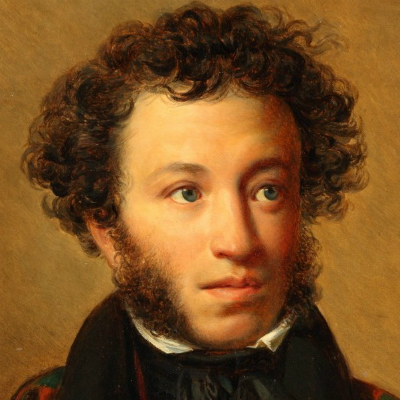
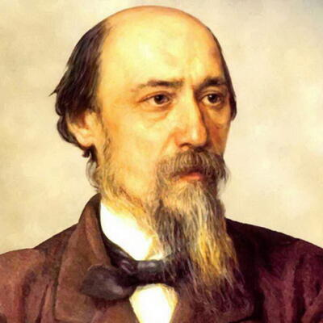

Стихи
Александр Пушкин: Стихи

Если вы относитесь к любителям произведений Александра Пушкина, или просто хотите снова почитать поэмы и стихи великого классика, то можете ознакомиться со списком его работ ниже.
Зимнее утро (Мороз и солнце; день чудесный)
Мороз и солнце; день чудесный!
Еще ты
дремлешь, друг прелестный —
Пора, красавица, проснись:
Открой сомкнуты негой взоры
Навстречу
северной Авроры,
Звездою севера явись!
Вечор, ты помнишь, вьюга злилась,
На мутном небе мгла
носилась;
Луна, как бледное пятно,
Сквозь тучи мрачные желтела,
И ты печальная сидела —
А
нынче… погляди в окно:
Под голубыми небесами
Великолепными коврами,
Блестя
на солнце, снег лежит;
Прозрачный лес один чернеет,
И ель сквозь иней зеленеет,
И речка подо
льдом блестит.
Вся комната янтарным блеском
Озарена. Веселым
треском
Трещит затопленная печь.
Приятно думать у лежанки.
Но знаешь: не велеть ли в
санки
Кобылку бурую запречь?
Скользя по утреннему снегу,
Друг милый, предадимся
бегу
Нетерпеливого коня
И навестим поля пустые,
Леса, недавно столь густые,
И берег, милый
для меня.
Зимняя дорога
Сквозь волнистые туманы
Пробирается
луна,
На
печальные
поляны
Льет печально свет она.
По дороге зимней, скучной
Тройка борзая
бежит,
Колокольчик
однозвучный
Утомительно гремит.
Что-то слышится родное
В долгих песнях ямщика:
То
разгулье
удалое,
То сердечная тоска…
Ни огня, ни черной хаты,
Глушь и снег… Навстречу
мне
Только
версты
полосаты
Попадаются
одне…
Скучно, грустно… Завтра, Нина,
Завтра к милой
возвратясь,
Я
забудусь у камина,
Загляжусь
не
наглядясь.
Звучно стрелка часовая
Мерный круг свой совершит,
И,
докучных
удаляя,
Полночь нас не
разлучит.
Грустно, Нина: путь мой скучен,
Дремля смолкнул мой
ямщик,
Колокольчик
однозвучен,
Отуманен
лунный лик.
Зима, Крестьянин, торжествуя
Зима!.. Крестьянин, торжествуя,
На
дровнях
обновляет путь;
Его
лошадка, снег
почуя,
Плетется
рысью как-нибудь;
Бразды пушистые взрывая,
Летит кибитка удалая;
Ямщик сидит на
облучке
В
тулупе, в красном кушаке.
Вот бегает дворовый мальчик,
В салазки жучку посадив,
Себя в
коня
преобразив;
Шалун уж заморозил пальчик:
Ему и больно и смешно,
А мать грозит ему в окно…
Николай Некрасов: Стихи

В этом Вам также поможет наш сайт, где собраны лучшие стихи прекрасного поэта, писателя и публициста Николая Некрасова.
Снежок
Снежок порхает, кружится,
На улице
бело.
И превратились лужицы
В холодное стекло.
В саду, где пели зяблики
Сегодня — посмотри! —
Как
розовые яблоки,
На ветках снегири.
Снежок изрезан лыжами,
Как мел, скрипуч и сух,
И
ловит кошка рыжая
Веселых белых мух.
В зимние сумерки
В зимние сумерки нянины сказки
Саша
любила. Поутру в салазки
Саша садилась, летела стрелой,
Полная счастья, с горы ледяной.
Няня кричит: «Не убейся, родная!»
Саша, салазки свои
погоняя,
Весело мчится. На полном бегу
Набок салазки — и Саша в снегу!
Выбьются косы, растреплется шубка –
Снег отряхает,
смеётся,
голубка!
Не до ворчанья и няне
седой:
Любит она её смех молодой…
Мороз-воевода
….Не ветер бушует над бором,
Не с
гор побежали ручьи,
Мороз-воевода дозором
Обходит владенья свои.
Глядит — хорошо ли метели
Лесные тропы занесли,
И
нет ли где трещины, щели,
И нет ли где голой земли?
Пушисты ли сосен вершины,
Красив ли узор на дубах?
И
крепко ли скованы льдины
В великих и малых водах?
Идет — по деревьям шагает,
Трещит по замерзлой
воде,
И яркое солнце играет
В косматой его бороде.
Забравшись на сосну большую,
По веточкам палицей
бьет
И сам про себя удалую,
Хвастливую песню поет:
«…Метели, снега и туманы
Покорны морозу
всегда,
Пойду на моря-окияны —
Построю дворцы изо льда.
Задумаю — реки большие
Надолго упрячу под
гнет,
Построю мосты ледяные,
Каких не построит народ.
Где быстрые, шумные воды
Недавно свободно
текли—
Сегодня прошли пешеходы,
Обозы с товаром прошли.
Богат я, казны не считаю,
А все не скудеет добро
Я царство мое убираю
В алмазы, жемчуг, серебро…»